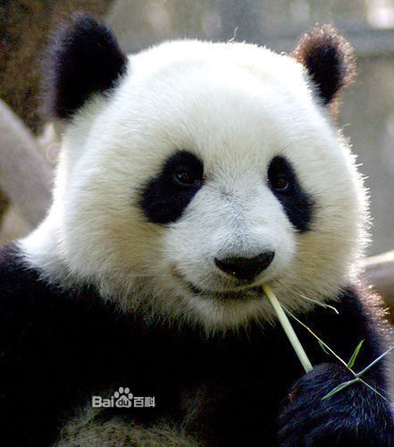
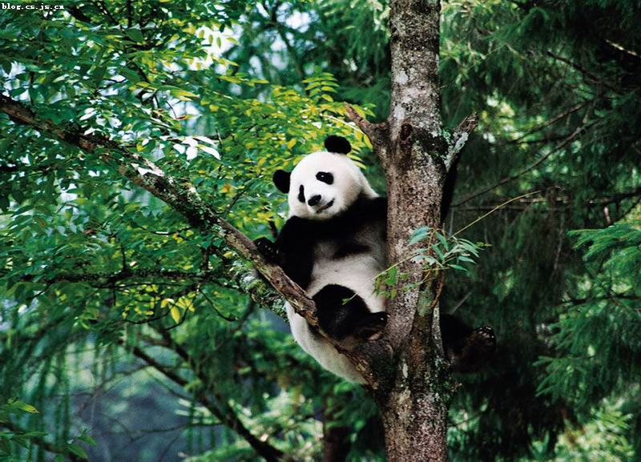
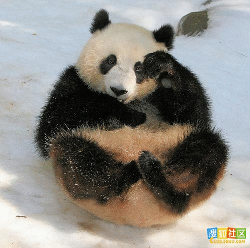

大熊猫（学名：Ailuropoda melanoleuca，英文名称：Giant panda），属于食肉目、大熊猫科的一种哺乳动物，体色为黑白两色，它有着圆圆的脸颊，大大的黑眼圈，胖嘟嘟的身体，标志性的内八字的行走方式，也有解剖刀般锋利的爪子。是世界上最可爱的动物之一。大熊猫已在地球上生存了至少800万年，被誉为“活化石”和“中国国宝”，世界自然基金会的形象大使，是世界生物多样性保护的旗舰物种。据第三次全国大熊猫野外种群调查，全世界野生大熊猫不足1600只，属于中国国家一级保护动物。截止2011年10月，全国圈养大熊猫数量为333只。大熊猫最初是吃肉的，经过进化，99%的食物都是竹子了，但牙齿和消化道还保持原样，仍然划分为食肉目。野外大熊猫的寿命为18～20岁，圈养状态下可以超过30岁。是中国特有种，现存的主要栖息地是中国四川、陕西和甘肃的山区。
大熊猫善于爬树，也爱嬉戏。爬树的行为一般是临近求婚期，或逃避危险，或彼此相遇时弱者借以回避强者的一种方式。熊猫有时还下到山谷，串入到山村小寨或住宅，把锅盆桶具，尤其是圆形的器皿当成玩具，玩耍后弃置山野。有时它们还和羊、猪等家养的牲畜亲善，随着同吃同住。大熊猫每天除去一半进食的时间，剩下的一半时间多数便是在睡梦中度过。
通常情况下，大熊猫性情总是十分温顺，初次见人，常用前掌蒙面，或把头低下，不露真容。它们很少主动地攻击其他动物或人，在野外偶然相遇时，总是采用回避的方式。但是一但当上了妈妈，其小宝贝就是神圣不可侵犯的，即便是关怀看望，也会惹怒母亲大动肝火，张牙舞爪，动手动脚。
大熊猫的食性是其最为奇特和有趣的习性之一，因为它几乎完全靠吃竹子为生，大熊猫99%的食物都是竹子，可供大熊猫食用的竹类植物共有12属、60多种。此外，野生大熊猫还偶食一些动物尸体或其它植物。
大熊猫仅存在于一个国家——中国。 它们曾经生活在低海拔的森林里，但是这些地区早已经被农耕、伐木以及其他的发展所侵占， 大熊猫的分布区已经相当狭小，现在大熊猫的栖息地完全被限制在四川中部、陕西以及甘肃的部分山脉中。栖息于海拔为1400米～3600米之间的落叶阔叶林、针阔叶混交林和亚高山针叶林带的山地竹林中。
目前大熊猫作为中国的国宝已被当做外交礼物送往各个国家，在其他国家它们也会得到悉心的照料。在中国很多地方都设置有大熊猫保护基地，在成都有大熊猫繁殖基地，你可以通过买票进去，在里面可以看到可爱的大熊猫。大熊猫繁育研究基地是以造园手法模拟大熊猫野外生态环境，现占地1000亩，绿化覆盖率达96%，营建了适宜大熊猫及多种珍稀野生动物生息繁衍的生态环境。这里常年圈养着80余只大熊猫以及小熊猫、黑颈鹤、白鹤等珍稀动物。 